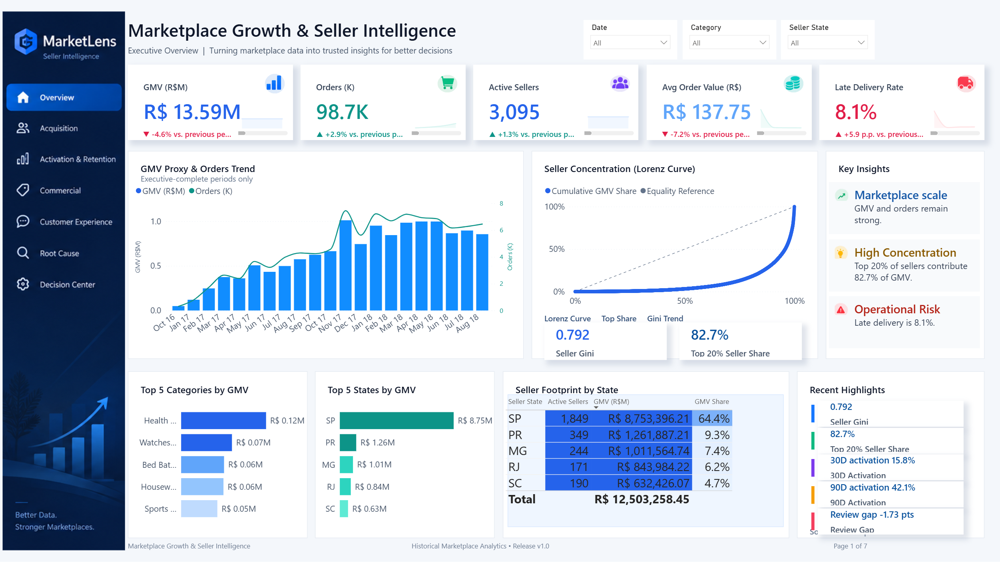

High seller concentration
Top 20% of positive-GMV sellers contribute 82.7% of seller GMV proxy.
An end-to-end data analytics project connecting marketplace performance, seller behavior, data quality, and operating decisions.
Actionable InsightsNot just descriptive reporting
End-to-End AnalysisAcquisition to retention
Business ImpactGrowth + Efficiency + Decisions

Headline values use the governed historical analytical scope. Directional arrows compare the final two complete months, Jul → Aug 2018.
The marketplace has meaningful breadth, but the operating story is not simply “growth.” Seller value is concentrated, seller activation is slow, and delivery performance is strongly associated with customer-experience risk.
Top 20% of positive-GMV sellers contribute 82.7% of seller GMV proxy.
Only 15.8% of observable closed sellers activate within 30 days.
Late orders show a +44.8pp higher low-review rate than on-time orders.
A high-level view of marketplace performance, seller concentration and key metrics.
Turning analytical evidence into practical next steps, with KPIs and guardrails.
Use MQL volume, conversion, matched-seller value, activation and M3 retention together.
Instrument 7/30/60-day onboarding checkpoints and test interventions against retention/value.
Prioritize delivery investigation using order volume × delay severity × review penalty.
Track top seller shares with category breadth rather than applying an arbitrary diversification rule.
The sections below preserve the analytical release logic behind the seven Power BI pages.
Payments and order items are both one-to-many by order_id. Joining them naïvely overstates GMV by 4.54%, or roughly R$617.5K. The analytical model calculates GMV at item grain before payment joins and gates incomplete periods before executive reporting.

Across 8,000 MQLs, acquisition origin is associated with observed conversion (Cramér’s V = 0.131). Paid Search converts at 12.3%, Organic Search at 11.8%, and Social at 5.6%. M3 retention evidence is too imprecise to rank origins reliably.

Canonical v3 uses observable denominators: 15.8% activate within 30 days, 30.8% within 60 days, and 42.1% within 90 days. Among observed activators, median days-to-first-sale is 44.3.

Seller GMV has a Gini coefficient of 0.792. The top 1% / 5% / 10% / 20% account for roughly 26.1% / 53.3% / 67.6% / 82.7% of seller GMV proxy.

Late orders average 2.57 review points versus 4.29 for on-time orders. The low-review rate is 54.0% versus 9.2% — a +44.8pp gap and 5.87× observed risk ratio.

Five governed decisions connect analysis to ownership, review frequency, KPIs, guardrails, and stop conditions.
| Priority | Decision | Action | Primary KPI | Guardrail | Owner / cadence |
|---|---|---|---|---|---|
| P1 | D01 Measurement contract | Exclude or visibly flag incomplete periods before trend reporting. | Period completeness | No valid complete period suppressed | Data / BI Daily |
| P1 | D02 Acquisition scorecard | Govern on volume, conversion, seller value, activation and M3 retention. | Conversion + downstream GMV | M3 retention | Seller Acquisition Weekly |
| P1 | D03 Onboarding checkpoints | Instrument 7/30/60D milestones and test interventions. | 30/60D activation | Retention + downstream GMV | Seller Operations Weekly |
| P2 | D04 Concentration monitoring | Monitor top seller shares and fragile category breadth. | Top 1/5/10/20% share | Active sellers / category | Commercial Analytics Monthly |
| P1 | D05 Delivery investigation | Prioritize by volume × delay severity × review penalty. | Late-delivery rate | Review / low-review rate | Customer Experience Daily / weekly |
Order-item GMV is protected from one-to-many payment fan-out.
Incomplete periods are gated before executive trend interpretation.
Fixed-window rates only use sellers observable for the full window.
Too-young cohorts are excluded from M3 retention denominators.
Effect size, confidence intervals, FDR, bootstrap and adjusted GLM support the diagnostics.
Descriptive, associative and causal statements are explicitly separated.
This is a historical anonymized Olist case study, not a current Brazil marketplace forecast. GMV is a proxy rather than platform revenue or profit. Marketing cost is unavailable, so CAC and ROAS are not estimated. Channel, onboarding and delivery results are observational and should not be interpreted as causal effects.
Practical lesson: a polished dashboard is only decision-ready when metric grain, observation windows, uncertainty, and ownership rules are explicit.
Explore the complete Power BI report or inspect the analytical project in GitHub.